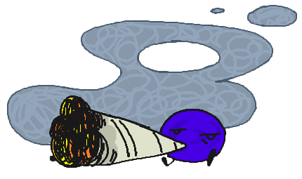
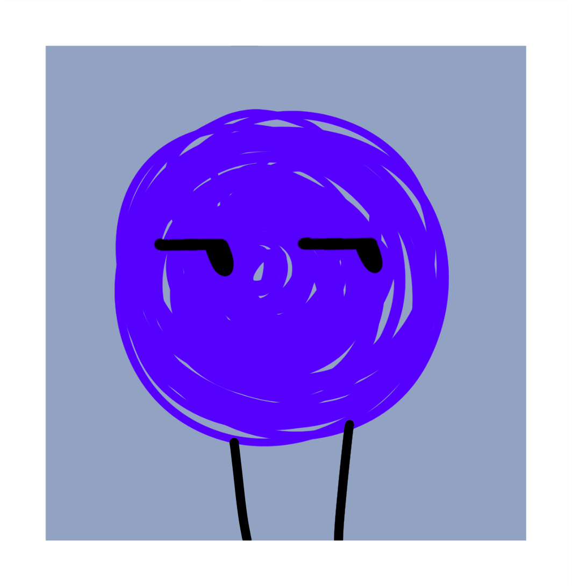

- Alias
- Indigo
- Object
- Color
- Identity
- He/Him, Genderless
- Time in the Inbetween
- 1,900+ blooms
- Favorite food
- —
- Favorite drink
- —
- Hobbies
- Dancing, spinning
- Favorite thing to do
- Study the psychology of interpersonal relationships between objects of different universes
- Favorite resident
- Indigo
Indigo is a simple little guy. He is chaotic, silent, mischievous, and opinionated, which he all skillfully showcases with his body language. He communicates through gestures, stomps, scribbles, and dramatic poses. Be careful where you walk, as he may be right under your foot.
Connections

Trivia
- Indigo loves to spin, the same way a hamster runs in a wheel.
- His longest spinning record is 42 hours, 37 minutes and 13 seconds.
- He's the most respectfully disrespected resident.
- For example, the residents like to dress him up and hang him on the Hearthlights Pillar as decor. Technically it counts, as the pillar is meant to hold things you are grateful for or symbols of them.
- Despite everything, Indigo cannot win a staring contest no matter how hard he tries.